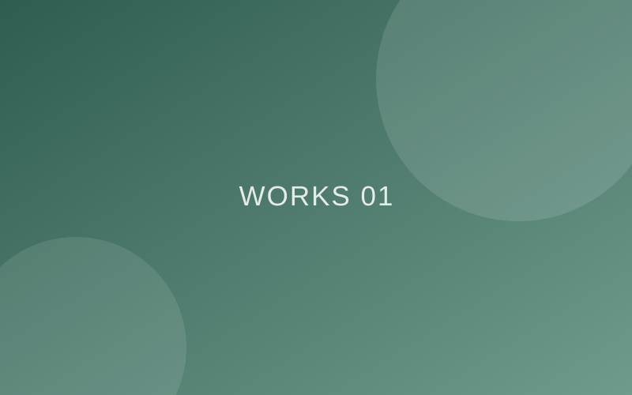
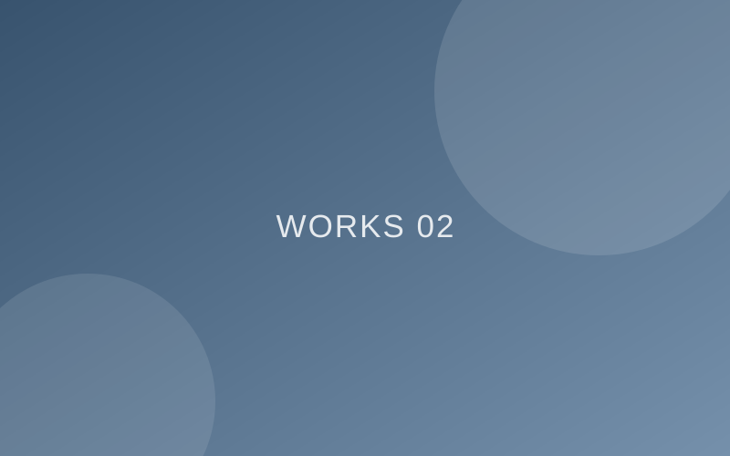
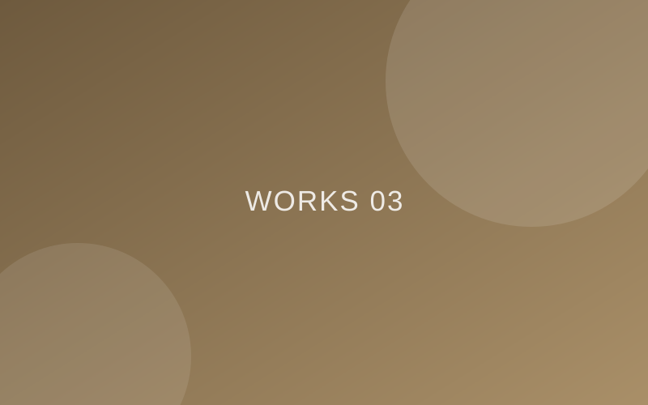

わかりやすい言葉で
伴走します
企業広報の現場で、Webにくわしくない人と一緒にサイトを作ってきました。専門用語を使わず、目的の整理からお手伝いします。
ホームページが必要だけど、何から始めればいいかわからない
制作会社は専門用語ばかりで、話がむずかしそう
作ったあとの更新や管理まで、面倒を見てほしい
その悩み、ぜんぶ「話しながら」解決できます。
企業広報の現場で、Webにくわしくない人と一緒にサイトを作ってきました。専門用語を使わず、目的の整理からお手伝いします。
構成の提案、デザイン、サーバー・ドメインの設定、公開作業まで一貫対応。「どこに何を頼めばいいの？」という迷子をなくします。
公開後の更新方法のレクチャーや、運用のご相談まで。自分で更新できるWordPress（SWELL）だから、育てていけるサイトになります。
6サイト
2年間で公開したサイト数
100%
企画から公開まで一貫担当
7件目
現在も新しいサイトを制作中

写真を活かしたビジュアル重視の構成。スマホでも心地よく読めるレスポンシブ設計。

Googleフォームと連携し、エントリーから通知までの流れを自動化した採用サイト。

滞在の情景が浮かぶスライダー演出。画像最適化で表示速度も両立しました。
※ 実績はすべて所属企業・関連施設のサイトとして担当したものです。詳しくはわたしについてをご覧ください。